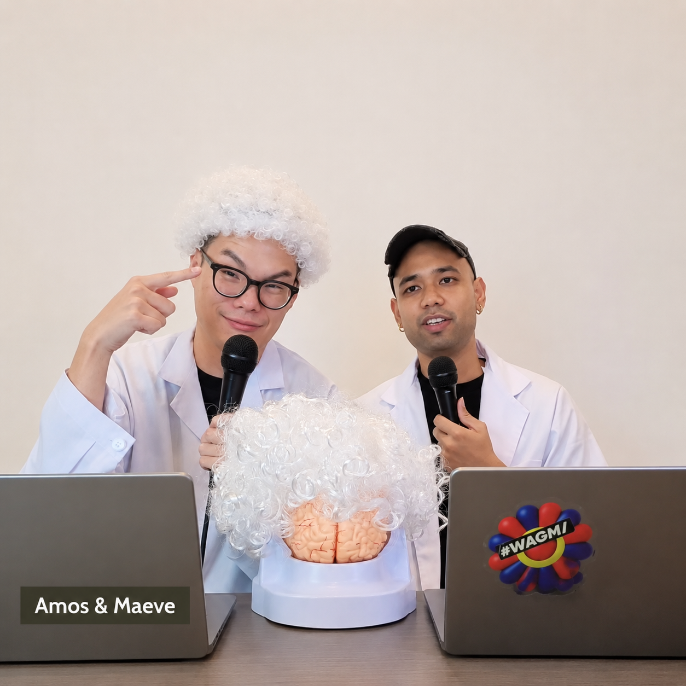

AINSTEIN // 001Case Study

10 Days From Idea to Live.
02The Questions
It Started With
Three
Questions
Why do you feel stuck when learning something new?
Why does learning often feel so lonely?

From those questions, we formed a thesis:
Learning should not only be useful. It should feel like an experience.
03The System
Idea → Speakers → Branding → Content → Distribution → Sign-up → Live Show → Community
From Empty Set to Live Show.
Speakers, identity, content and distribution took 001 from an idea to a live show.

Six Sessions. Live.
YouTube and X carried six sessions showing how people were actually using AI.

The Show Became the Archive.
The sessions became recordings in Skool — and the start of the AINSTEIN community.

04The Experience

The Work Happened Live.
See It Live, From Anywhere.
Six live sessions brought the speakers and their work directly to anyone who wanted to tune in.


Watch Online. Connect Offline.
Rooms across Malaysia, Hong Kong, the Philippines and India turned the online show into a shared local experience.

05What 001 Taught Us
Seeing helps. But seeing alone doesn’t make you better.

001 showed us the value of seeing how people actually work.
It also exposed the next problem: watching someone do something does not guarantee you leave able to do it yourself.
So the next question became: how do we turn seeing into doing?
Watch AINSTEIN 001 →All six sessions are available on Skool.